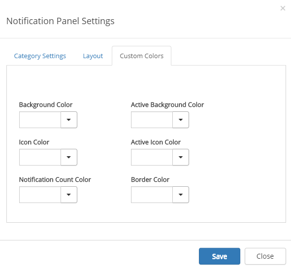

Notification Panel
The notification panel control helps the end user to find information that is updated in the portal.
To change the settings for the control, activate the Edit switch and then click on the settings gear.
This will open the settings dialog.
The order of notification categories on the start page is reflected here. You can change the order on the start page by using drag and drop.
Add Category
If you would like to add a notification, you use Add Category. Follow these steps:
- Click "Add Category" on the left-hand side.
- Add a category title and select an icon from the Font Awesome library.
- Add one or more available view controls (installed in Omnia) from the list.
- You can sort the rendering order of the view controls using drag and drop.
- Select notification type: Automatic or Custom. Automatic can be used on all Omnia view controls. This means that the notification count on the category will be calculated based on the result in the view. A custom notification service can be used for legacy web parts or view controls that require specific business logic. Note! If "Custom" is selected, a notification service url needs to be provided (Example: User feed notification url: https://pfp-tc1.azurewebsites.net/api/social/following/new?dayLimit=30)
Edit Category
Follow these steps to edit a category:
- Click on any of the existing categories on the left-hand side.
- Change title, icon or view controls etc.
- Click "Save".
Delete Category
Follow these steps to delete a category:
- Hover any of the existing categories on the left-hand side.
- Click on the remove icon.
- Click "Save".
Layout
On this tab you can set Tab Layout.
- Responsive: On small screens the tabs will be shown horizontally, on larger screens it will be shown vertically.
- Horizontal: The tabs will always be shown horizontally.
- Vertical: The tabs will always be shown vertically.
Note! Additional design can be applied using a customer specific CSS extension.
Custom Colors
You should primarily set colors through Theme colors in Omnia Admin (System/Settings/Default colors). If you still would like custom colors for the control, you can set them using this tab.
